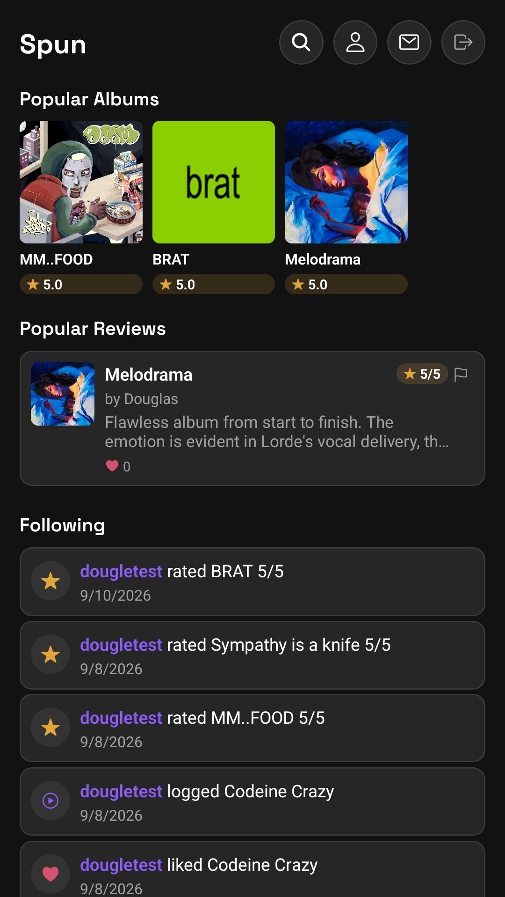

whoami
Software engineer studying Computer Science and Mathematics of Finance & Risk Management at the University of Michigan. I like building things from the database up.
~/about
I'm a CS student at Michigan with a second major in Math of Finance & Risk Management, currently looking for new-grad software engineering roles. My coursework spans data structures and algorithms, database systems, web systems, and machine learning, and I've spent the past couple of months building Spun, a full-stack social app, end to end — backend, mobile client, and infrastructure.
~/projects/spun

A social rating & review app for music — built solo, end to end
A Letterboxd-style diary for music: rate and review albums and songs, build ranked lists, follow other listeners, and discover what's popular. I designed and built the full stack myself — a REST API over a normalized Postgres schema, a React Native mobile client shipping to the App Store and Play Store, and the infrastructure behind both.
~/projects/other
~/skills
~/education
B.S. Computer Science and Mathematics of Finance & Risk Management · GPA 3.5/4.00 · University Honors
Coursework: Data Structures & Algorithms, Database Management Systems, Web Systems, Machine Learning
~/experience
Built and maintained the business's public website (HTML, CSS, JavaScript, jQuery, Bootstrap).